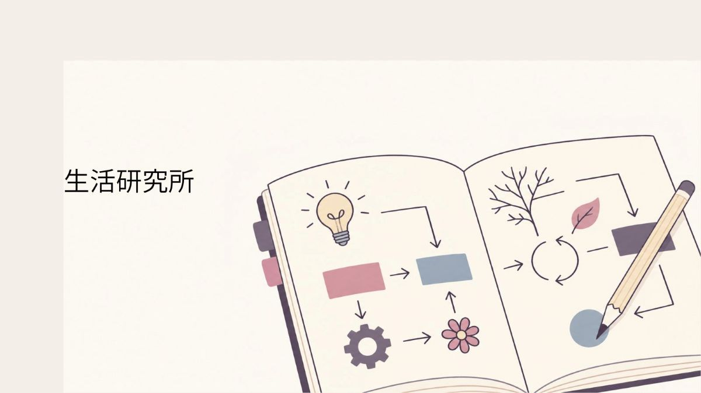

大きな問題だけが、研究の対象とは限りません。
毎日の暮らしの中にある「なんとなく気になる」を拾い上げ、観察・記録・検討しています。
研究テーマ
-
焼きそばをおいしく作るには
同じ材料を使っても、なぜ仕上がりが違うのか。
-
台風の日のやり過ごし方
外に出られない日を、どう過ごすと少し楽なのか。
-
靴下はなぜ片方だけなくなるのか
洗濯後に発生する「片方だけない」現象について。
-
原因がよく分からない頭重について考える
はっきりした原因が分からないとき、日常生活の中でどのように記録し、観察できるか。
-
使いかけの野菜はなぜ冷蔵庫に残り続けるのか
「あとで使う」と思ったものが、そのままになる理由を調べる。
-
輪ゴムはいつの間にか増えるのか
必要なときには見つからず、必要でないときには大量に出てくる現象について。
生活の観察
市民から寄せられた「これってなんなんだろう」を記録しています。 日々の暮らしの中にある小さな違和感や習慣、失敗、便利だった方法なども、 生活を知るための大切な手がかりです。
-
小さな違和感
なんとなく気になるけれど、わざわざ調べるほどでもないこと。
-
暮らしの習慣
いつの間にか身についている、家庭や地域ごとの習慣。
-
やってみたけれどうまくいかなかったこと
失敗した方法も、生活を知るための記録になります。
-
意外と便利だったこと
誰かにとっては当たり前でも、別の誰かには役に立つ方法。
研究報告
調査や実験の結果、そこから分かったことや考えたことを公開しています。
-
調査結果
集めた情報や観察した記録をまとめています。
-
実験結果
実際に試してみて分かったことを記録しています。
-
考察
得られた結果から、その理由や傾向について考えます。
-
研究中
まだ結論が出ていないものも、そのまま研究の途中として記録しています。
問い合わせ
「調べてほしいこと」や「気になっていること」を受け付けています。
いただいた内容は、今後の研究テーマや生活の観察に活用します。
なお、個別の医療相談や専門的な診断についてはお答えできません。
施設情報
| 所在地 | ピコぬ市内某所 |
|---|---|
| 電話 | ぬぬーぬかピコー9439（くらし探究） |